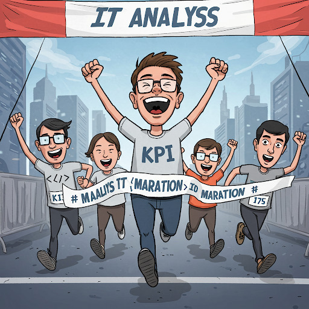

Slide 9 Governança da Informação - COBIT 5.0 - Os 5 Princípios
9.0.1 Os 5 Princípios do COBIT
O conceito de Princípio COBIT se traduz em uma Filosofia e objetivos na a TI se baseia e aplica em toda Empresa. Por se tratar de uma Filosofia e não de um conjunto de processos engessados, COBIT pode ser implantado desde a empresa mais complexa até a mais simples.
Os 5 princípios tornam o COBIT um MODELO CLARO, INTEGRADO e COMPARTILHADO: Diretores, Presidente, RH conseguem todos devem falar a mesma lingua quando o assunto é o papel da TI na organização. Entedner qual é o papel da TI, seus riscos, custos e valor gerado.
O modelo COBIT 5 é baseado em cinco princípios básicos para a governança e gestão de TI da organização. Estes princípios são:
9.0.1.1 1º Princípio: Atender às Necessidades das Partes Interessadas

As organizações existem para criar valor para suas Partes interessadas, mantendo o equilíbrio entre a realização de benefícios e a otimização do risco e uso dos recursos. O COBIT 5 fornece todos os processos necessários e demais habilitadores para apoiar a criação de valor para a organização com o uso de TI. Cada organização pode personalizar o COBIT 5 de acordo com seu contexto específico por meio da cascata de objetivos, traduzindo objetivos corporativos de alto nível em objetivos de TI específicos e gerenciáveis, que são então mapeados em práticas e processos específicos.
9.0.1.2 2º Princípio: Cobrir a Organização de Ponta a Ponta
O COBIT 5 integra a governança corporativa de TI à governança corporativa:
| Processos de Negócio x Processos de TIC | Cobre todas as funções e processos corporativos, considerando a tecnologia da informação e tecnologias relacionadas como ativos que devem ser tratados como qualquer outro ativo por todos na organização |
| Alinamento de Gestores e Fornecedores | Considera todos os habilitadores de governança e gestão de TI aplicáveis em toda a organização, de ponta a ponta, incluindo tudo e todos - interna e externamente - que forem considerados relevantes para a governança e gestão das informações e de TI da organização |
9.0.1.3 3º Princípio: Aplicar Um Modelo Único Integrado

Existem muitas normas e boas práticas relacionadas a TI, cada qual fornecendo orientações para um conjunto específico de atividades de TI. O COBIT 5 se alinha a outros padrões e modelos importantes em um alto nível e, portanto, pode servir como um modelo unificado para a governança e gestão de TI da organização.
9.0.1.4 4º Princípio: Permitir uma Abordagem Holística
Uma governança e gestão eficiente e eficaz de TI da organização requer uma abordagem holística, levando em conta seus diversos componentes interligados. O COBIT 5 define um conjunto de sete categorias de habilitadores para apoiar a implementação de um sistema abrangente de gestão e governança de TI da organização.
| Item | Habilitador |
|---|---|
| 01 | Princípios, Políticas e Modelos |
| 02 | Processos |
| 03 | Estruturas Organizacionais |
| 04 | Cultura, Ética e Comportamento |
| 05 | Informação |
| 06 | Serviços, Infraestrutura e Aplicativos |
| 07 | Pessoas, Habilidades e Competências |
9.0.1.5 5º Princípio: Distinguir a Governança da Gestão

O modelo do COBIT 5 faz uma clara distinção entre governança e gestão. Essas duas disciplinas compreendem diferentes tipos de atividades, exigem modelos organizacionais diferenciados e servem a propósitos diferentes. A governança garante que as necessidades, condições e opções das Partes Interessadas sejam avaliadas a fim de determinar objetivos corporativos acordados e equilibrados; definindo a direção através de priorizações e tomadas de decisão; e monitorando o desempenho e a conformidade com a direção e os objetivos estabelecidos.
9.0.1.6 5º A “Gestão” mencionada no 5o princípio:
A gestão irá implantar os 37 processos COBIT. São atividades e práticas para se executar no dia-a-dia.
Estes processos estão agrupados nos seguintes domínios:
| Grupo | Significado |
|---|---|
| EDM | - Avaliar, Dirigir  e Monitorar |
| APO | - Alinhar, Planejar e Organizar |
| BAI | - Construir, Adquirir e Implementar |
| DSS | - Entregar, Servir e Suportar |
| MEA | - Monitorar, Avaliar e Analisar |
9.1 Cobit Aferição de Performance
9.1.1 KPI - indicadores-chave de desempenho
KPIs (Key Performance Indicator) ou indicadores-chave de desempenho são definidos como uma métrica quantificável usada para monitorar o progresso na realização dos objetivos comerciais. Mais especificamente, um KPI fornece informações sobre o desempenho do ativo mais importante de uma organização: as pessoas.

Os KPIs são considerados o molho secreto da estratégia empresarial moderna, e todos estão qualificados para utilizá-los. Indicadores-chave de desempenho eficazes permitem que as pessoas tomem decisões precisas e rápidas.
| KPIs bem projetados podem capacitar as equipes a resolver ineficiências, eliminar solicitações que consomem muito tempo e alinhar tarefas e projetos com metas de toda a empresa. |
| As empresas devem se concentrar nas métricas que têm o maior impacto sobre sua sustentabilidade. Ao focar em projetos, ferramentas e sistemas que realmente fazem a diferença, as empresas constroem um roteiro para maximizar sua velocidade em direção ao crescimento da receita. |
| É crucial identificar as métricas de negócios diretamente relacionadas às metas de negócios. Diferentes áreas terão diferentes KPIs (vendas, produtos, finanças). É importante entender o que cada área quer alcançar e seus critérios de sucesso. Um KPI que não contribui para uma meta de negócios deve ser descartado. |
| Após identificar as métricas, elas devem ser organizadas em indicadores principais (de avanço) e indicadores secundários (de atraso). Os indicadores de avanço mostram se é necessário ajustar a estratégia para alcançar o resultado desejado, enquanto os indicadores de atraso determinam o desempenho dos processos em um período mais longo. |
| Os KPIs devem ser claros e específicos e compreensíveis por toda a empresa. |
| É recomendado colocar os KPIs em uma ferramenta remota para registrar e monitorar o progresso, pois relatórios em formatos tradicionais podem se tornar rapidamente desatualizados e menos acessíveis. O ClickUp é apresentado como uma ferramenta para essa finalidade, oferecendo dashboards personalizáveis. |
| Monitorar KPIs como uma equipe ajuda a definir critérios claros e mensuráveis para o sucesso, permitindo que as equipes trabalhem para atingir metas específicas e medir continuamente seu progresso, o que pode levar a maior envolvimento e motivação. |
| A seleção dos KPIs adequados dependerá do propósito, das metas e dos objetivos da equipe, bem como da análise do desempenho anterior e de fatores externos. |
| Se uma equipe não estiver atingindo as metas de KPI, é importante identificar a causa raiz do problema e garantir que os KPIs sejam alcançáveis, relevantes e realistas. |
9.1.2 Exemplos de KPIs
9.1.2.1 Performance de Vendas
Indicadores de performance para o departamento de vendas;
| KPI | Descrição |
|---|---|
| Custo de aquisição de clientes | O custo total de aquisição de um cliente (inclui custos gastos no processo de vendas e por meio de esforços de marketing). |
| Atividades de vendas por representante | O número total de tarefas concluídas em um determinado período de tempo. |
| Taxa de conversão de leads em clientes | A porcentagem de leads convertidos em seu processo de vendas. |
| Receita total de vendas | A receita total gerada por seus produtos em um período definido. |
9.1.2.2 Performance de Operações de um setor
Indicadores de performance para uma operação de um departamento ou setor;
| KPI | Descrição |
|---|---|
| Duração do ciclo de vendas | O tempo médio que leva entre o contato inicial e o fechamento. |
| Horas extras | O número de horas trabalhadas por um funcionário além de suas horas de trabalho normalmente programadas. |
| Processos desenvolvidos | O número de melhorias feitas nas operações atuais. |
| Custos de inventário | O valor total de todas as despesas relacionadas ao armazenamento de mercadorias não vendidas. |
| Utilização do espaço de escritório | A porcentagem do espaço de escritório usado pelos funcionários. |
| Uso de vantagens da empresa | A porcentagem de vantagens usadas pelos funcionários. |
9.1.2.3 Performance financeira da empresa
Indicadores de performance para setor financeiro da empresa;
| KPI | Descrição |
|---|---|
| Retorno sobre o patrimônio líquido | A medida de desempenho financeiro com base no lucro líquido dividido pelo patrimônio líquido. |
| Margem de lucro líquido | A quantidade de dinheiro que sua empresa tem após todas as despesas terem sido deduzidas da receita total. |
| Custo dos produtos vendidos | O custo total de fabricação dos produtos que uma empresa vende (exclui despesas com vendas, administração e marketing). |
| Índice de dívida para patrimônio líquido | A proporção do total de passivos da empresa em relação ao patrimônio líquido. |
| Fluxo de caixa livre | A quantidade de dinheiro restante após as despesas de capital. |
9.1.2.4 Performance de um website
Indicadores de performance para interações em um website;
| KPI | Descrição |
|---|---|
| Proporção de tráfego para MQL | A proporção entre a plataforma de tráfego total gerada e o número de leads qualificados para marketing provenientes desse tráfego. |
| Erros de rastreamento | O número de URLs que são inacessíveis para o Googlebot quando ele examina suas páginas. |
| Taxa de rejeição | O número de pessoas que saíram de seu site em apenas alguns segundos após a chegada. |
| Usabilidade móvel | A velocidade e o desempenho da sua página de destino em telefones e guias. |
| Tráfego de referência | O número de pessoas que visitam seu site a partir de suas mídias sociais. |
9.1.2.5 Performance de inicialização de clientes
Indicadores de performance para início de relacionamento com clientes;
| KPI | Descrição |
|---|---|
| Valor da vida útil do cliente | A receita que sua empresa pode esperar de contas de clientes individuais. |
| Taxa de ativação | A porcentagem de usuários que concluem qualquer evento importante no processo de integração. |
| Runway | O número de meses que a empresa pode operar antes de ficar sem dinheiro. |
| Duração média do ciclo de vendas | O número de dias que leva para fechar um negócio, em média. |
| Burn mensal | O montante de dinheiro gasto por mês. |
9.1.2.6 Performance de inicialização de clientes
Indicadores de performance para início de relacionamento com clientes;
| KPI | Descrição |
|---|---|
| Valor da vida útil do cliente | A receita que sua empresa pode esperar de contas de clientes individuais. |
| Taxa de ativação | A porcentagem de usuários que concluem qualquer evento importante no processo de integração. |
| Runway | O número de meses que a empresa pode operar antes de ficar sem dinheiro. |
| Duração média do ciclo de vendas | O número de dias que leva para fechar um negócio, em média. |
| Burn mensal | O montante de dinheiro gasto por mês. |
9.1.2.7 Performance de Produtos
Indicadores de performance para Produtos;
| KPI | Descrição |
|---|---|
| Net Promoter Score (NPS) | O número que indica se seus usuários estão prontos para recomendar seu produto a amigos, colegas etc.. |
| Escalonamentos de tíquetes de suporte | O número de tíquetes transferidos para um gerente de suporte ao cliente de nível superior para serem resolvidos. |
| Índice de satisfação do cliente (CSAT) | A taxa de escala da experiência geral de um cliente com o produto, serviço ou funcionário de uma empresa. |
| Velocidade | O número total de testes manuais e automatizados realizados. |
| Daily Active User | O número de usuários ativos por dia. |
9.2 Exercícios de Fixação
9.2.1 Testes de múltipla escolha
| TESTE 01 |
|---|
| De acordo com a distinção feita pelo COBIT 5, qual das alternativas abaixo descreve corretamente as responsabilidades principais da Governança de TIC? |
| A) Uso ponderado de recursos (pessoas, processos, práticas, etc.) para atingir determinados objetivos relacionados à tecnologia da informação. |
| B) Alinhamento das atividades de planejamento, desenvolvimento, organização e controle operacional com a orientação definida e a geração de relatórios sobre essas atividades. |
| C) Garantir que as necessidades, condições e opções das Partes Interessadas sejam avaliadas, definindo a direção através de priorizações e tomadas de decisão, e monitorando o desempenho e a conformidade com a direção e os objetivos estabelecidos. |
| D) Execução da orientação definida pelo órgão de governança, aplicando os recursos disponíveis de TIC de forma inteligente. |
| E) Controle operacional dos serviços de TI, sejam internos ou externos, e garantia de que a estratégia de negócios seja suportada de maneira controlada. |
| TESTE 02 |
|---|
| Um dos principais objetivos do COBIT é oferecer um framework abrangente que auxilia as organizações a otimizar o valor gerado pela TI. Conforme as fontes, quais são outros objetivos principais do COBIT? |
| A) Descrever melhores práticas para gerenciamento de serviços de TI, focando na manutenção e operação da Infraestrutura de TI e no gerenciamento de incidentes e problemas,. |
| B) Permitir que a TI seja governada e gerenciada de forma holística para toda a organização e criar uma linguagem comum entre TI e negócios para a governança e gestão de TI corporativa. |
| C) Fornecer gerenciamento da TI com maior controle sobre os Ativos de TI (IC’s) da organização e criar e manter uma Base de Dados do Gerenciamento da Configuração (BDGC). |
| D) Definir critérios claros e mensuráveis para o sucesso, permitindo que as equipes trabalhem para atingir metas específicas enquanto medem continuamente seu progresso. |
| E) Identificar pontos fracos e desencadeadores para criar um desejo de mudança nos níveis de gestão executiva, definindo o escopo da implementação. |
| TESTE 03 |
|---|
| O COBIT 5 é baseado em cinco princípios básicos para a governança e gestão de TI. O Quarto Princípio é “Permitir uma Abordagem Holística”,. De acordo com as fontes, o que este princípio envolve? |
| A) Integrar a governança corporativa de TI à governança corporativa, cobrindo todas as funções e processos corporativos, e considerando a TI como ativo a ser tratado por todos na organização. |
| B) Assegurar que as necessidades, condições e opções das Partes Interessadas sejam avaliadas a fim de determinar objetivos corporativos acordados e equilibrados. |
| C) Levar em conta diversos componentes interligados (habilitadores) para uma governança e gestão eficiente e eficaz de TI da organização, definindo sete categorias de habilitadores. |
| D) Alinhar-se a outros padrões e modelos importantes em um alto nível, servindo como um modelo unificado para a governança e gestão de TI da organização. |
| E) Fazer uma clara distinção entre governança e gestão, compreendendo diferentes tipos de atividades, modelos organizacionais diferenciados e propósitos diferentes. |
| TESTE 04 |
|---|
| Conforme descrito nas fontes, qual é um dos propósitos fundamentais dos indicadores-chave de desempenho (KPIs) eficazes? |
| A) Servir como métricas quantitativas para relatórios diários de status de projetos. |
| B) Permitir que as pessoas tomem decisões precisas e rápidas. |
| C) Determinar quão bem os processos e atualizações são realizados em um período de tempo mais curto para ajustes imediatos. |
| D) Substituir a necessidade de um Banco de Dados de Gerenciamento da Configuração (CMDB) para controle de ativos de TI. |
| E) Focar exclusivamente em indicadores de atraso para determinar o desempenho dos processos em um período mais longo. |
| TESTE 05 |
|---|
| As fontes mencionam a organização de métricas em duas categorias de indicadores-chave de desempenho. Quais são essas categorias e suas características principais? |
| A) Indicadores Internos e Externos: Medem o desempenho dentro da organização e em relação ao mercado. |
| B) Indicadores de Curto Prazo e Longo Prazo: Medem resultados imediatos e resultados acumulados ao longo do tempo. |
| C) Indicadores Financeiros e Não Financeiros: Medem o impacto na receita/custos e em outros aspectos como satisfação do cliente ou produtividade. |
| D) Indicadores Principais (de Avanço) e Indicadores Secundários (de Atraso): Os de avanço indicam a necessidade de ajustar a estratégia, enquanto os de atraso determinam o desempenho em um período mais longo. |
| E) Indicadores SMART e Não SMART: Indicadores que são específicos, mensuráveis, acionáveis, pertinentes e tempestivos versus aqueles que não são. |
| TESTE 06 |
|---|
| O princípio do COBIT 5 “Permitir uma Abordagem Holística”, define um conjunto de sete categorias de habilitadores,, para apoiar a implementação de um sistema abrangente de governança e gestão de TI,. Qual das alternativas abaixo apresenta uma dessas categorias de habilitadores? |
| A) Serviços, Infraestrutura e Aplicativos. |
| B) Domínio Avaliar, Dirigir e Monitorar (EDM). |
| C) Gerenciamento de Incidentes. |
| D) Gerenciamento da Continuidade de Serviços TIC. |
| E) Modelo de Capacidade de Processo. |